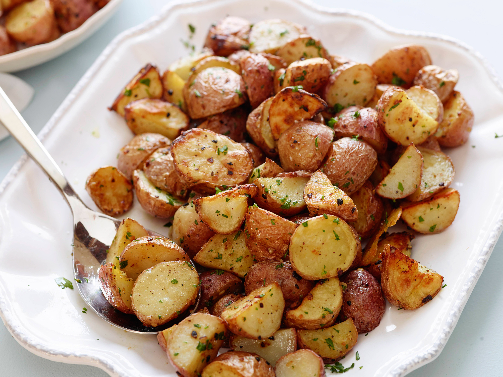

Roasted Potatoes

Description
I love roasted potatoes and I wanted to pick 2 recipes that were really quick and easy since the butter chicken recipe was really long. This recipe is coming from the top of my head
Ingredients
- 1 lb red potatoes cubed into half inch pieces
- olive oil
- salt
- pepper
Instructions
- Wash potatoes and peeling is optional
- Cube potatoes into half-inch pieces
- Preheat oven to 400 degrees F
- Toss potatoes in oil and salt and pepper and place on sheet tray
- Roast in oven until desired browness is achieved